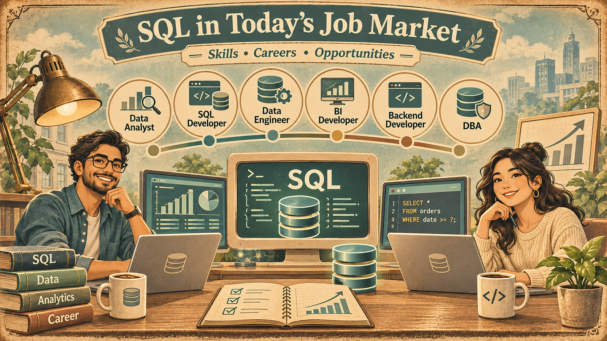

1. Why Is SQL Important in Today's Job Market?
In today's digital world, companies rely on data to understand their operations, customers and business performance.
Behind many applications, reports and analytics platforms are databases containing valuable information.
SQL helps professionals work with this information and transform data into useful insights.
From startups to large organizations, SQL skills are relevant across multiple technology and business roles.
Learning SQL can help build a foundation for careers involving data analysis, reporting, application development and data engineering.
2. Career Opportunities with SQL
SQL is not limited to one job role. Different professionals use SQL to solve different types of problems.
Data Analyst
Turn Data into Meaningful InsightsUses SQL to retrieve, filter, summarize and analyze business information, identifying trends and performance metrics.
SQL Developer
Build Database SolutionsDevelops database queries, stored procedures and solutions for retrieving and managing information efficiently.
Data Engineer
Build Reliable Data PipelinesUses SQL to transform, validate and prepare data for reporting, analytics and data platforms.
BI Developer
Transform Data into DashboardsPrepares datasets for reports and dashboards, often using SQL with Power BI, Tableau or Oracle Analytics.
Backend Developer
Connect Applications with DataWorks with databases to support application functionality, retrieving and managing records through database interactions.
Database Administrator
Manage Database SystemsMaintains databases, monitors performance, manages access and supports data availability.
3. What SQL Skills Do Employers Look For?
Different positions require different levels of SQL knowledge. Several concepts commonly appear in interviews.
🟢 Beginner
- SELECT and WHERE
- DISTINCT
- ORDER BY
- Aggregate functions
- GROUP BY and HAVING
🔵 Intermediate
- INNER JOIN and LEFT JOIN
- Subqueries
- Common Table Expressions
- CASE expressions
- NULL handling
🟣 Advanced
- Window functions
- ROW_NUMBER, RANK, DENSE_RANK
- Duplicate identification
- Query optimization basics
- Complex business scenarios
4. What Do Interviewers Expect?
Technical interviews often evaluate practical problem-solving skills, not just memorized SQL commands.
🎯 Understand the Requirement
Identify exactly what information the question is asking for.
🧩 Choose the SQL Approach
Decide when to use filters, joins, aggregations or subqueries.
⌨️ Write Accurate Queries
Produce the correct results for the given requirements.
💬 Explain the Solution
Explain how the query works and why the chosen approach is appropriate.
🔎 Solve Practical Problems
Apply SQL knowledge to unfamiliar datasets and business questions.
Interview expectations vary depending on experience, role and organization.
5. How Can You Prepare for a SQL Career?
Building SQL skills is a gradual journey that requires consistent practice.
Understand the Fundamentals
Learn database concepts and basic SQL statements.
Practise Writing Queries
Work with sample datasets and solve problems independently.
Learn Intermediate and Advanced SQL
Progress to joins, subqueries, CTEs and window functions.
Solve Interview-Based Challenges
Practise explaining your queries and validating their results.
Build Practical Experience
Create small projects, document solutions and learn tools relevant to your chosen career.
6. Key Takeaway
SQL is a versatile skill that supports multiple career paths in today's data-driven workplace.
Whether your goal is to become a Data Analyst, SQL Developer, Data Engineer or BI Developer, a strong SQL foundation can help you develop relevant practical skills.
Your progress depends not just on learning commands, but on how confidently you apply SQL to real problems.